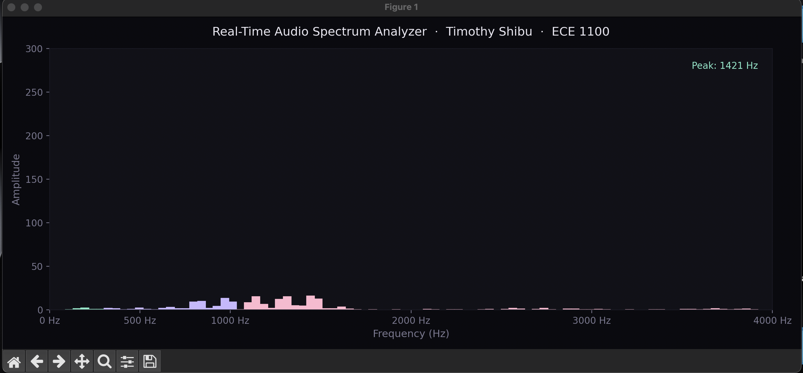

Hardware-focused engineer with a passion for digital logic, signal processing, and the elegant intersection of music and technology. Currently exploring FPGA development, chip design, and real-time systems at Georgia Tech.
"The engineer's first problem in any design situation is to discover what the problem really is." — Unknown Engineering Proverb
I'm Timothy Shibu, a Computer Engineering student at the Georgia Institute of Technology, originally from Lilburn, Georgia. Growing up in a close-knit community shaped my belief that technology is most powerful when it connects and uplifts people.
My academic focus lies at the intersection of hardware and software — specifically in digital logic, FPGA development, and computer architecture. I am a member of Silicon Jackets, Georgia Tech's student-run integrated circuit design club, where I have contributed to real tapeout-bound projects including schematic-to-layout verification for a 64-bit adder block.
Outside of engineering, music is central to who I am. I have served as a Music Director leading ensembles of 15+ musicians and work as a private instructor teaching drums and bass. This background in music has sharpened skills that translate directly to engineering: disciplined practice, systems thinking, and the ability to both lead and listen.
This ePortfolio is a professional showcase of my technical projects, academic growth, and career trajectory. It is designed for recruiters, faculty, and collaborators interested in hardware engineering and digital systems.
Java, Python, C, C#, JavaScript
Android Studio, GitHub, MATLAB, Unity
SystemVerilog, FPGA Development, Schematic-to-Layout Verification
English (Fluent), Malayalam (Conversational)
My long-term ambition is to become a hardware engineer specializing in chip architecture and VLSI design — contributing to the development of next-generation processors, FPGAs, or custom silicon at a company at the frontier of semiconductor innovation. Getting there requires a deliberate, step-by-step plan built on strong fundamentals, hands-on experience, and continuous learning.

A Python application that captures live microphone input and displays a real-time frequency spectrum visualization — a color-coded bar graph showing frequency amplitudes as sound is captured. The project explores the relationship between analog signals and digital signal processing, connecting to core ECE concepts in signals and systems.
Project Idea & Motivation
As both a musician and an engineer, I have always been fascinated by the science of sound. I chose this project because it sits at the intersection of two things I care about — music and electrical engineering. The idea was to build a tool that makes the invisible visible: sound is all around us, but we rarely get to see its frequency structure in real time. By building a spectrum analyzer from scratch, I could apply ECE concepts like sampling theory and Fourier analysis to something I interact with every day.
Project Progress — Week by Week
Successes & Challenges
ECE Skills Gained
Final Thoughts
This project exceeded my expectations. Going in, I understood music intuitively as a musician — but I had never thought about it mathematically. Implementing the FFT and watching it correctly identify a 440 Hz tone in real time was genuinely exciting. It made abstract concepts from signals and systems feel tangible and real. This project has deepened my interest in the Signals & Systems thread and made me curious about future applications in audio engineering and hardware accelerators for DSP workloads. I plan to continue expanding this — potentially adding a spectrogram view and eventually porting the processing to an FPGA.
Tools & Libraries
Python 3.9 · NumPy · SciPy · Matplotlib · SoundDevice · macOS built-in microphone
Designed and developed a 3D game in Unity where players must evade an AI-controlled adversary. As the sole developer, I was responsible for game architecture, AI behavior scripting in C#, level design, and performance optimization. After profiling the build, I identified and refactored redundant physics calculations, improving overall game performance by 15%. This project introduced me to real-time system constraints and the importance of efficient code in interactive applications.
Developed and deployed two functional websites as part of the Objects & Design course. Through a combination of self-directed learning and faculty guidance, I built these projects using HTML and CSS, gaining familiarity with front-end structure and deployment workflows. This experience reinforced object-oriented thinking applied to UI design and gave me a foundation in web-based project delivery.
As a member of Silicon Jackets, Georgia Tech's student IC design club, I contributed to a major project milestone by performing schematic-to-layout verification for a 64-bit adder block ahead of the team's tapeout submission. This work required careful attention to functional integrity, ensuring the physical layout matched the intended schematic behavior at each stage. The experience provided direct exposure to the VLSI design flow and the rigorous verification process required before a chip is sent to fabrication.
I am currently seeking a Summer 2026 Hardware Engineering Internship. If you are a recruiter, collaborator, or fellow engineer interested in connecting, I would be glad to hear from you.
You can also find me at Georgia Tech's ECE department events and Silicon Jackets meetings throughout the academic year.